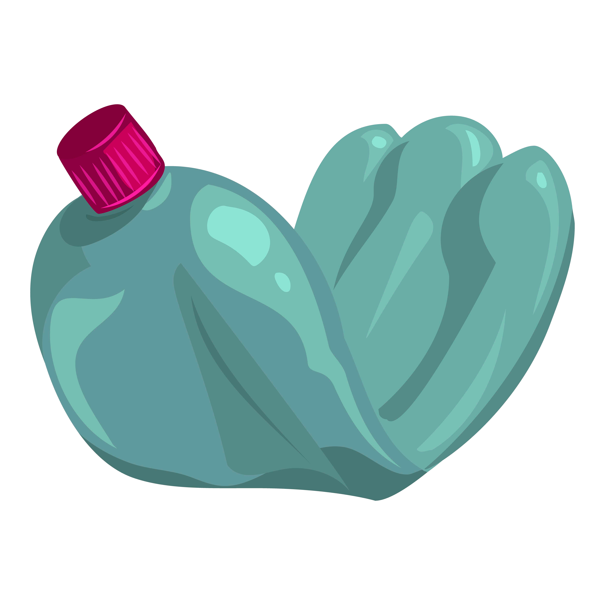

Elimina la contaminación para ver la página web (Pincha en ella)
¡NO MIRES, ACTÚA!
ASEGURA UN FUTURO CON
Bio
SixBlue
100% Reciclado y Reciclable
Mantiene la rigidez del plástico original
Puede resistir varios Kg de peso
Necesidad
El 40% de las crías de ave mueren cada año y el 98% de éstas tienen plástico en el estómago. Todos hemos visualizado imágenes de tortugas enredadas en las anillas de plástico que sirven como envase u organización de las latas de refresco.
La contaminación en tierra y mar producida por los plásticos desechados al ambiente natural es un grave problema que afecta a la biodiversidad marina y terrestre. Dicha contaminación puede provocar un cambio radical en las vidas de los animales que se encuentren en el medio-ambiente contaminado.
Esto, a su vez tiene un impacto indirecto en las personas que consumimos productos originarios de animales. Se dice que somos lo que comemos, por lo que no es de extrañar que cada vez tengamos más enfermedades relacionadas con causas desconocidas.

SABÍAS QUÉ...
El 80% de la contaminación en el mar son plásticos.
El 90% de las aves marinas tienen plásticos en sus estómagos.
78% de los desechos plásticos que producimos van a parar al medio ambiente.
Solución
Nuestro producto trata de sustituir el Six Pack Ring clásico (esas anillas que se usan para organizar las latas de bebidas) por uno con la misma apariencia y textura con la diferencia de que será biodegradable, para influir en la mejora del medio natural y en el bienestar de todas las personas que consuman productos de origen animal, especialmente de especies marinas.
Nosotros proponemos el “Bio Six Blue” que viene asociado a que se quiere devolver el color original de los océanos, es decir, el azul. Estará formado por alcohol polivinílico y azúcares naturales, usaríamos un molde para darle la forma del Six Pack Ring y este tendría la misma flexibilidad, textura y aspecto del plástico original. Nuestro Bio Six Blue puede terminar tranquilamente en el medio marítimo y terrestre ya que no perjudicaría al medio-ambiente.
Materiales
Alcohol polivinílico
Azúcares naturales
Este producto reduciría un gran porcentaje de la contaminación de plásticos ya que el Six Pack Ring es algo que se usa de manera abundante y afecta demasiado a la biodiversidad.
Beneficios
Nuestra propuesta aportará salud y bienestar a la vida marítima y terrestre, además de reducir los miles de riesgos que produce en el medio-ambiente, lo que beneficia indirectamente a las personas.
Hasta ahora, la manera de organizar las latas de bebidas ha sido un éxito sin tener en cuenta los daños que provoca en el exterior, por eso nuestro producto es una mejora debido a que cumple con la misma función y apariencia, en cambio no contamina, por lo que hacemos un dos por uno.
Colaboraciones
Contaremos con el apoyo de los ecologistas ya que tenemos objetivos similares.
La industria pesquera se vería beneficiada al reducir la contaminación debido a que esto puede aumentar su captura de peces.
Los proveedores de la materia prima necesitan que les compremos sus ecursos en la mayor cantidad posible.
Las empresas a las que les ofrecemos el producto buscan aprovecharse de la buena acción que sería para así conseguir apoyo social y aumentar sus ventas.
Colaborando con las ODS
.png)
14.1 De aquí a 2025, prevenir y reducir significativamente la contaminación marina de todo tipo, en particular la producida por actividades realizadas en tierra, incluidos los detritos marinos y la polución por nutrientes.
14.2 De aquí a 2020, gestionar y proteger sosteniblemente los ecosistemas marinos y costeros para evitar efectos adversos importantes, incluso fortaleciendo su resiliencia, y adoptar medidas para restaurarlos a fin de restablecer la salud y la productividad de los océanos.
12.4 De aquí a 2020, lograr la gestión ecológicamente racional de los productos químicos y de todos los desechos a lo largo de su ciclo de vida, de conformidad con los marcos internacionales convenidos, y reducir significativamente su liberación a la atmósfera, el agua y el suelo a fin de minimizar sus efectos adversos en la salud humana y el medio ambiente.
12.5 De aquí a 2030, reducir considerablemente la generación de desechos mediante actividades de prevención, reducción, reciclado y reutilización.
12.a Ayudar a los países en desarrollo a fortalecer su capacidad científica y tecnológica para avanzar hacia modalidades de consumo y producción más sostenibles.